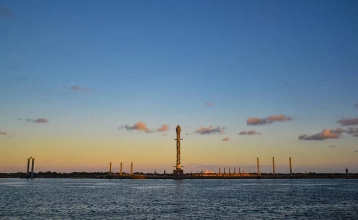

Ponto turístico: Parque das Esculturas Francisco Brennand
o Parque das Esculturas, uma instalação a céu aberto sobre o molhe do porto, composta por 90 obras do artista plástico Francisco Brennand, inaugurada em comemoração aos 500 anos do Descobrimento do Brasil. Dentre as esculturas, o destaque vai para a imponente Coluna de Cristal, que não passa despercebida com seus 32 metros de altura.
